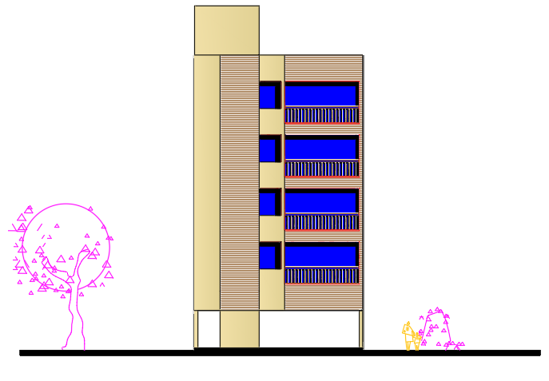

درباره ما
دفتر طراحی سازه ما با تجربه بیش از 50 پروژه و 65 هزار متر مربع طراحی در شهر شیراز و استان فارس طراحی و بهینهسازی انواع سازههای ساختمانی ارائه میدهد. هدف ما ایجاد طرحهایی ایمن، اقتصادی و کارآمد است که علاوه بر رعایت اصول فنی، نیازهای کارفرما و شرایط اجرایی پروژه را نیز به بهترین شکل پاسخ دهد. ما رویکردی دقیق و مسئولانه، از مرحله ایده و مطالعات اولیه تا ارائه نقشههای اجرایی و نظارت بر حسن انجام کار در کنار شما هستیم. تعهد به کیفیت، ارائه راهحلهای مهندسی نوآورانه و احترام به زمان و بودجه پروژه، سه اصل کلیدی فعالیت ماست.
پروژه ها
پروژه فولادی منطقه 2 شیراز طراحی و ارائه نقشه های کارگاهی با طراحی بهینه برای اثر پیچش در زلزله

 پروژه سازه بتنی درمانگاه امام علی لامرد. این پروژه با مساحتی بیش از 3400 متر مربع طراحی شده است.
پروژه سازه بتنی درمانگاه امام علی لامرد. این پروژه با مساحتی بیش از 3400 متر مربع طراحی شده است.
 پروژه قصرالدشت با دارا بودن 2 عدد پارکینگ برای هر واحد یکی از چالش برانگیزترین پروژه ها بود. در این پروژه با استفاده از بتن با مقاومت بالا و همچنین استفاده از قاب خمشی این نیاز به پارکیگ تامین شده است
پروژه قصرالدشت با دارا بودن 2 عدد پارکینگ برای هر واحد یکی از چالش برانگیزترین پروژه ها بود. در این پروژه با استفاده از بتن با مقاومت بالا و همچنین استفاده از قاب خمشی این نیاز به پارکیگ تامین شده است
 پروژه باغ ویلای همایجون با استفاده از سیستم دیوار باربر بنایی کلافدار از پروژه های باغ شهری گروه ما میباشد
پروژه باغ ویلای همایجون با استفاده از سیستم دیوار باربر بنایی کلافدار از پروژه های باغ شهری گروه ما میباشد

خدمات
- مشاوره در زمینه طراحی بهینه ساختمانهای مسکونی
- طراحی سازه های بتن آرمه و فونداسیون با ارائه نقشه های مهر شده و مورد تایید شهرداری
- طراحی سازه های فولادی و فونداسیون با ارائه نقشه های مورد مهر شده و تایید شهرداری
- طراحی ساختمانهای ویلایی خارج از شیراز
تماس با ما
Phone: +98 917 711 9892
Phone: +98 936 171 3919
WhatsApp: +98 917 711 9892